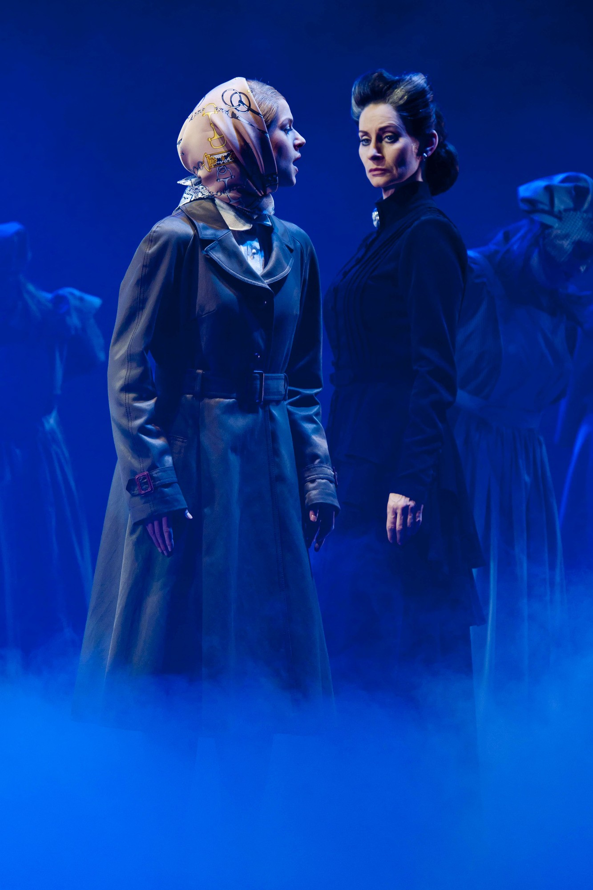

Back
1
A. Warum kannst du mich nicht lieben?
B. Die Schatten werden länger (Reprise)
C. Der einfache Weg
D. Gott, warum?
2
A. Der letzte Tanz
B. Wenn ich dein Spiegel wär
C. Wie kann es möglich sein?
D. Der einfache Weg
3
A. Jenseits der Nacht
B. Wenn ich tanzen will
C. Hilf mir durch die Nacht
D. Der Schleier fällt
4
A. Die Schatten werden länger (Reprise)
B. Ich bin, ich bin Musik
C. Wenn ich dein Spiegel wär
D. Wie wird man seinen Schatten los?
5
A. Ich gehör nur mir
B. Der letzte Tanz
C. Irgendwo wird immer getanzt
D. Rebecca (Reprise)
6
A. Ich gehör nur mir
B. Der Schleier fällt
C. Prolog (Alle tanzten mit dem Tod)
D. Elisabeth, mach auf mein Engel
7
A. Rudolf, wo bist du?
B. Boote in der Nacht
C. Wenn ich dein Spiegel wär
D. Ich gehör nur mir
8
A. Mozart, Mozart!
B. Ich bin, ich bin Musik
C. Warum kannst du mich nicht lieben?
D. Der Prinz ist fort
9
A. Hier in Wien!
B. Was für ein Kind!
C. Ich bin extraordinär
D. Mozart, Mozart!
10
A. Mozarts Tod
B. Wie wird man seinen Schatten los?
C. Papa ist tot
D. Was für ein grausames Leben
11

A. Gott, warum?
B. Der Ball von Manderley
C. Ich hab geträumt von Manderley (Reprise)
D. Ich hab geträumt von Manderley
12
A. Ohne Sie
B. Wir sind Eins
C. Einmal
D. Heut ist ein großer Tag
13
A. Du bleibst bei mir!
B. Die Fäden in der Hand
C. Ungeheuerlich!
D. Vergiss es!
14
A. Wärst du heute hier
B. Boote in der Nacht
C. Weisst du noch?
D. Zeit in einer Flasche
15
A. Hölle auf Erden
B. Sünden der Väter
C. Geschichte
D. Zu Ende
16
A. Eh du verloren bist
B. Die ruhmreiche Schlacht
C. Der Weg in die Zukunft
D. Der Mann ist tot
17
A. Kalte Sterne
B. Wenn ich dein Spiegel wär
C. Nur sie allein
D. Roseanne
31
A. Ein wenig Farbe
B. Wie Du
C. In Meiner Welt
D. Ich bin extraordinär
32
A. Du bleibst bei mir
B. Milady ist zurück
C. Rebecca (Reprise)
D. Die Welt gehört mir
33
A. Ich will dir nur sagen
B. Nichts, nichts, gar nichts
C. Einladung zum Ball
D. Ich gehör' nur mir
34
A. Nicht aus Stein
B. Totale Finsternis
C. Die unstillbare Gier
D. Gott ist tot
35
A. Einmal
B. Liebe
C. Draußen ist Freiheit
D. Für Sarah
36
A. In dem Moment als ich Dich sah
B. Du bist meine Welt
C. Was ist nur los mit ihm?
D. Die Letzte Nacht der Welt
37
A. Nichts ist schwer
B. Liebe endet nie
C. Dich kennen heißt Dich lieben
D. Im Sturm der Liebe
38
A. O Herr
B. Alles ist vorbei
C. Gott, warum?
D. Mein Gott, warum?
39
A. Kitsch
B. An Deck der sinkenden Welt
C. Alle Fragen sind gestellt
D. Mayerling-Walzer
40
A. Sie ergibt sich nicht
B. Zeit in einer Flasche
C. Was ist nur los mit ihm?
D. Eine Kaiserin muss glänzen
41
A. Manderley in Flammen
B. Kein Lächeln war je so kalt
C. Die Voruntersuchung
D. Gott, warum?
Previous
1/5
Next
Submit